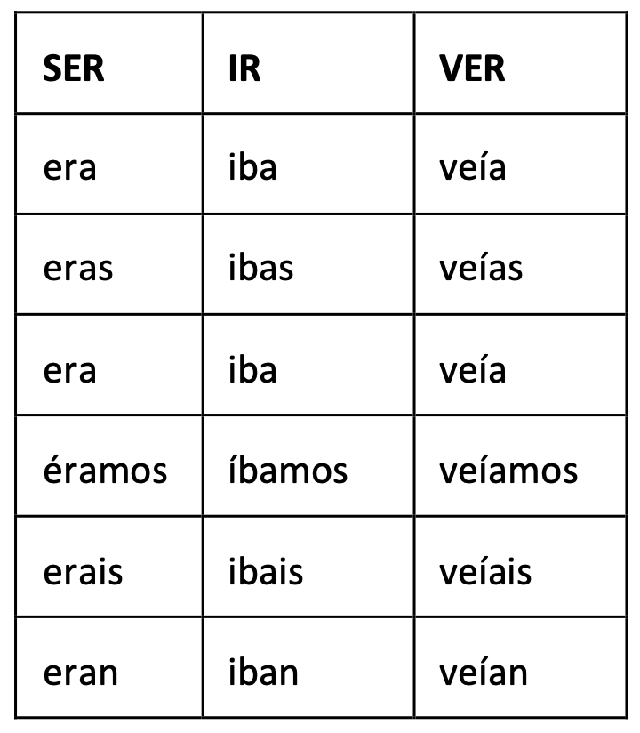
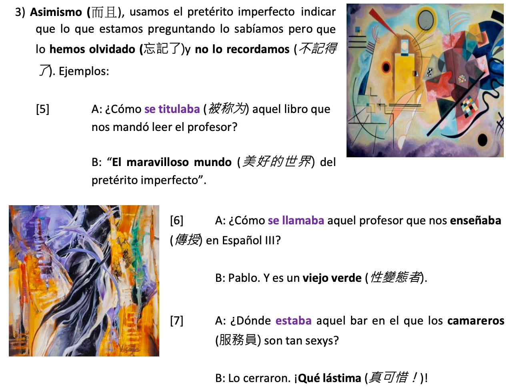
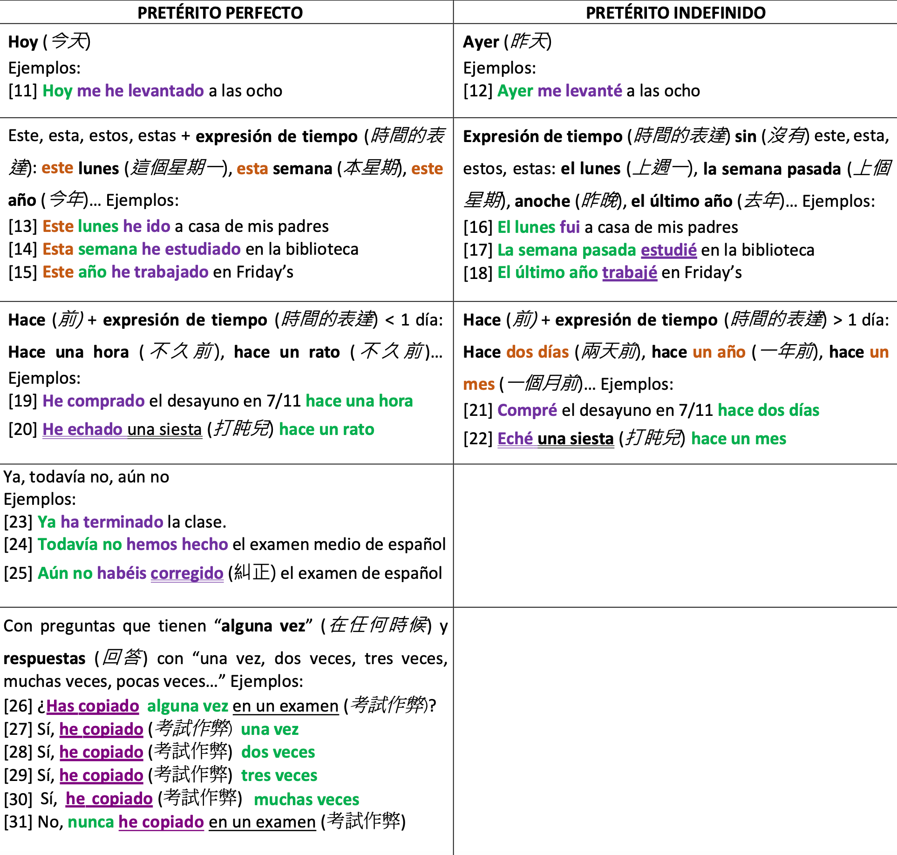
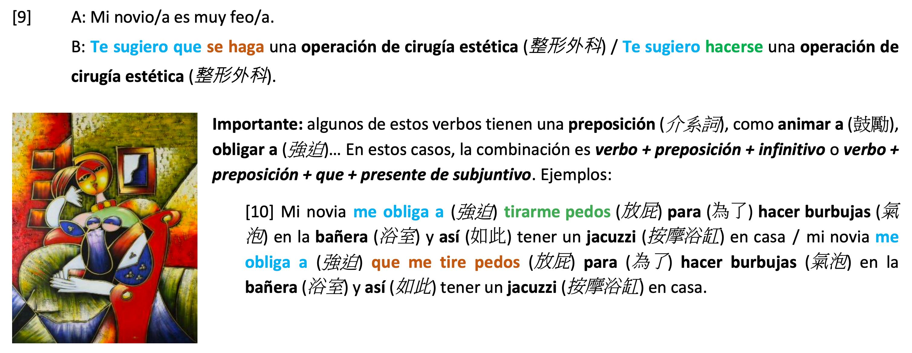

Spanish¶
Typing Spanish¶
mac¶
Long press on a letter and select or press the following key combinations:
- Option + e, a.
- Option + e, Shift + a.
- Option + e, e.
- Option + e, Shift + e.
- Option + e, i.
- Option + e, Shift + i.
- Option + n, n.
- Option + n, Shift + n.
Present Participle / Gerundio¶
- e-X-ir i-X-iendo
- o-X-ir u-X-iendo
- e.g.
- baar estar baando
Present Perfect¶
pretrito perfecto
- he/has/ha/hemos/habis/han
- ar ado
- er ido
- ir ido
- irregular
- hacer hecho
- escribir escrito
- volver vuelto
- decir dicho
- poner puesto
- me he dado un paseo = go for a walk
- darse un paseo = pasear
- no me he duchado

- A qu hora te has levantado hoy? Te has duchado esta maana? A qu hora has desayunado esta maana? Qu has hecho por la maana? Has venido a clase en moto? Has llegado tarde a clase de espaol? Te has puesto una chaqueta? Has abierto la ventana de tu habitacin? Has encendido tu ordenador? Te has puesto unos pantalones negros?
- hace XXX = XXX ago
- hace media hora = half an hour ago
- hace 10 minutos = 10 minutes ago
- ya = already
Past Tense / Pretrito Indefinido¶
Changes in third person¶

past tense
- e->i
- divertirse -> se divirti
- sentir -> sinti
- seguir -> sigui
- preferir -> prefiri
- pedir -> pedi
- repetir
- elegir
- servir
- y
- leer -> ley
- creer -> crey
- construir -> construy
- or -> oy
- o->u
- morir -> muri
- dormir -> durmi
Irregular¶
Past Imperfect / Petrito Imperfecto¶
Only 3 irregular verbs - ser, ir, ver

Use Case¶
- When the action wasn't over at the present time of the story
- when describing the vibe or environment
- Ayer cuando me duchaba, mi madre me llam / telfone
- Yesterday when I was showering, my mom called me.
- when he was 50 yo = a los 50 aos = cuando tena 50 aos
- when describing the vibe or environment
- past habit
- requesting something
- explaining a dream
- asking something
- 
- if I were you
- See If I were you
Futuro imperfecto¶
irregulars
Usage¶
Can be used when guessing what happened (without probablemente / posiblemente / etc. in front)
Subjunctive present¶
ser + adj. + que + subjunctivo
Regular¶
a/e/i -> e/a/a, otherwise the same transformation
Irregular¶
Often times the same prefix as the indicative present verb
except the below one
Use Case¶
I suggest that ...
- Te recomiendo que + subjunctive
- Te sugiero que + subjunctive
Subjuntivo Imperfect¶
- indicativo + a/as/a/amos/ais/an
- present 3rd person + se/ses/se/semos/seis/sen
Imperative¶
- hablar -> habla
t & vosotros¶
- t -> same as present third person
- with 8 exceptions
- with 8 exceptions
- vos -> base + d
- no exceptions

usted & ustedes¶
Same as usted/ustedes present but replace e/a with a/e
Irregulars: similar to the irregular present singular tense
Exceptions
negative¶
same as #Subjunctive present
reflexive¶
Same conjucation append -/te/se/nos/os/se. Remove the d for second person plural.
placement of pronouns¶
- positive: {imperativo}{people pronoun}{object pronoun}
- negative: no {people pronoun} {object pronoun} {imperativo (subjuntivo)}
Profession¶
profesin
- cantante:
- cocinero: cook
- camarero: bartender / waiter
- dependiente: clerk
- periodista: journalist
- enfermero: nurse
- secretario: secretary
- medico: doctor
- dentista : dentist
- estudiante: student
- abogado: lawyer
- jubilado: retired
- ama de case: housewife
- maestro/a = profesor(a)
- actor/actriz: actor/actress
- tenista: tennis player
- escritora: writer
- deportista: sportsman
- azafata =
- enfermero = nurse
- empresario = businessman
- ingeniero = engineer
- maestro = teacher
- bombero = firefighter
- trabaja de bombero
- profesor particular =
- peluquero = barber
- carnicero = butcher
- fontanero = plumber
- informtico = IT
Food¶
- lasaa = lasagna
- bocadillo = sandwitch
- un bocadillo de atn
- mantequilla = butter
- arroz = rice
- arroz frito =
- fideo = noodles
- fideo con ternera =
- firjoles = beans
- galletas = cookies
- mani = peanut
- azcar = sugar
- sal = salt
- vino = wine
- cebolla = onion
- queso = cheese
- aceite = oil
- aceite de oliva = olive oil
- huevos = eggs
- calabaza = pumpkin
- lechuga = lettuce
- zanahorias = carrots
- tomates = tomatoes
- patatas = potatoes
- yogur = yogurt
- zumo = juice
- zumo de narania = orange juice
- helado = ice cream
- plato = dishes
- sopa = soup
- picante = spicy
- asado = roasted
- turrn = (nougat)
- nunca he comido = never have eaten
Fruit¶
- manzanas = apples
- pltanos = bananas
- naranja = orange
- fresa = strawberry
- melocotn = peach
- cereza = cherry
- ciruela = plum =
Vegetables¶
- ajo = garlic
- apio = celery =
- pepino = cucumber
- esprrago = asparagus =
- pimiento = bell pepper =
- pimienta = black pepper =
- espinaca = spinach =
Meat¶
- cordero = lamb
- ternera = beef
- pollo = chicken
- pollo frito = fried chicken
- cerdo = pork
- cochinillo =
- cochinillo asado =
- filete = steak
- chuletas =
- chuletas de cordero =
- jamn = ham
- chorizo = sausage
Seafood¶
- mariscos = seafood
- merluza =
- atn = tuna
- sardinas = sardine
- salmn = salmon
- calamares = squids
- calamares a la romana =
Transportation¶
- metro
- tren = train
- toma el tren = take the train
- avin = airplane
- coche = car
- bicicleta = bici = bicycle
- montar en bicicleta
- motocicleta = moto = motorcycle
- voy a clases en moto
- montar en moto
- a pie = on foot
- voy a clases a pie
- andando = on foot
- voy a clases andando
- facturacin = check-in
- asiento = seat
- viajero = traveler / passenger
- equipaje = luggage
- embarque = boarding
- e.g. puertas de embarque = boarding gates
- barco = ship / boat
- taquilla = ticket office / box office
- rivisor = ticket collector
- sala de espera = waiting room
- precedente de = coming from
- e.g. el tren precedente de Mardrid
- con destino a = heading for
- e.g. el vuelo con destino a Barcelona = a flight heading for Barcelona
- atasco = traffic jam

- e.g.
- Cmo vienes/vas a clases? (Vengo) en moto.
- Cunto (tiempo) tardas en llegar? (Tardo) 20 minutos (en llegar).
- Cmo va al trabajo tu padre? (Mi padre va al trabajo) En moto. Y tu madre? / Cmo va al trabajo tu madre? (Mi madre va al trabajo) En metro. Cunto (tiempo) tarda en llegar tu padre? (Mi padre tarda) unos 30 minutos (en llegar). Y tu madre? / Cunto (tiempo) tarda en llegar tu madre? (Mi madre tarda) unos 50 minutos (en llegar).
- e.g.
Train related¶
- revisor = ticket collector
- horario = trenes = train schedule
- va = railway
- vagn = car (of a train)
- e.g. el vagn F = car F
- andn = platform (of a train station)
Airplane related¶
- piloto = pilot
- vuelo = flight
- azafata = flight attendant
- subir al avin = get on the plane
Movies¶
- cartelera = marquee =
- gnero = genre
- pelcula de dibujos animados = cartoon movie
- action = accin
- comedia = comedy
- romncia = romance
- guerra = war
- terror = horror
- entrada = ticket
- subttulos = subtitles
- guin = script
- guionista = scriptor
- cartel = poster
- banda sonora = soundtrack
- sala de cine = movie theater
- taquilla = ticket / box office
- proyectar = project
- rodar = shoot (a film)
- pantalla = screen
- estreno = premiere
- alquilar = rent
- alquilar pelculas en DVD
Emotion¶
- triste = sad
- est triste
- hambre = hunger
- tener hambre
- tengo un hambre = I'm very very hungry
- sed = thirst
- tiene sed
- sueo = sleepy
- tiene sueo
- preocupado = worried
- enfadado = angry
- enfermo = sick
- est enfermo
- cansado = tired
- feliz = contento = happy
- estoy feliz = estoy contento
- nervioso = nervous
- miedo = fear
- tiene miedo
- asco = digust

- vergenza = embarassment
- a Pablo le da vergenza que ... (rzon)
- avergonzar = to embarass
- tocar la lotera = win the lottery
- tocar:
- to touch
- to play (an instrument)
- to win (a lottery)
- soportar = put up with
- aguantar = put up with

Spanish 1-1¶
¶
- adivinar: guess
- descansar: take a rest
- mentira = lie mentiroso/a = lier
- Eres un mentiroso Eres una mentirosa
- verdad: truth
- por que
- mucho gusto: nice to meet you
- de nada: no problem
- trabalenguas:
- rabo:
- coche: car
- serpiente: snake
- palabras: words
- rico: rich / delicious
- fiesta: party
- caso: case
- hablar de un caso: talk about a case
- claro: sure
- qu desea: what do you want
- tomar = drink
- venga: come on
- cario: dear
- yo s = i know
- el da: the day
- qu tal el da: how was the day?
- rbol: tree
- tambien: too tamboco: too
- tu torno: your turn
- tu primero: you first
- dibujar: to draw
- plural
- unas agendas
- unos mapas
- unas llaves
- una hoja de papel unas hojas de papel
- un movil uno mviles
- moneda: coin/currency
- billetes: bill
- cntimos: cents
- T escribes una moneda ... ?
- una moneda de __ cntimos
- 1 a
- 2 a
- 20 a
- 50
- un billiete de __ euros
- 5
- 10
- 200 a
- 500 a
- eliges: choose
- est en el sur = in the south
- region
- bosque = forest
- desierto = desert
- isla = island
- costa = coast
- monumento = monument
- playa = beach
- parque = park
- rio = river
- un gran valor artstico = big artistic value
- recuerdo =
- puerto = harbor
- origen = origin
- dinmica =
- el mundo entero = the whole world
- verdadero = true falso = false
- hapitantes = population
- (BDPT)

- (LL)elle & (Y)ye alike
- (\(\(\widetilde{N}\)\)) \(\(e\widetilde{n}e\)\)
- a
- (H)ache che
- c
- ce ci : c
- ca co cu = ka ko ku
- G
- /h
- ge gi
- ga go gu
- /h
- J
- ja je ji jo ju
- O
- on
- P
- but
- H
- ha he hi ho hu = a e i o u
- v
- va ve vi vo vu = ba be bi bo bu
- q
- que qui = ke ki
- Pique
- r
- rolled r, when after nothing/l/n/r
- e.g. Luis Enrique, perro, Roma
- rolled r, when after nothing/l/n/r
- ll
- y
- t
- ue e
- accent
- t: you tu: your
- mi/tu/su
- mi/tu/su + singular noun
- mis/tus/sus + plural noun
- nuestro(s)/vuestro(s)/su(s) our/your/their
- https://www.spanishdict.com/translate/
- es/son
- vivo/vivos
- Trrrr
- Prrrr
- ????
- ser vs. estar
- estar for locations & temporary conditions
- hpapelera = stationary


- Que es ...?
- Qu palabras tienen tres slabas? 3 syllables

-
- mesa
-
- postal
-
- lmpara
-
- bolso
-
- ordernador
-
- mapa
- un
-
- diccionario
-
- peridico
-
- boligrafo
-
- libro
-
- agenda = diary
-
- carta = letter
-
- sello = stamp
-
- sobre = envelope
-
- lleva
-
- movil
-
- cuarderno = notebook
-
- goma
-
- silla = chair

- En una papelera (yo) puedo comprar libros, mesa, sellos, bolso, cuaderno, lmpara, agenda, cartas, mapa, postal, goma, hoja de papel, periodico, diccionario, boligrafos y silla.
- tienda: store
- librera: bookstore
- tienda de libros
- papelera: stationary
- comprar: buy
- tiene =
- aqu estn = ( )
- tenemos todos estos = We have all these ( )
- puedo ver ese rojo =
- Cuntos cuesta? =
- vale = Ok
- me lo llevo = ( = )
- (yo) volver = I'll come back
- (El) lo comprar. = He buys it.
- comprar: buy vender: sell
- Qu quiere? What do you want to buy?
- Cunto cuesta? Ho much $?
- muy caro: too expensive
- ms barato, por favor: cheaper plz
- librera: bookstore
- hay = there is
- A: Yo primero o t primero. B: mmm yo! A: ok. B: En tu mesa hay un/una/unos/unas.? A: S, hay. No, no hay. A: Mi turno. En tu mesa hay ..? B: S, hay. No, no hay. (En tu mesa) hay..

- this/that
- this: este/esta
- este bolgrafo
- esta goma
- that: ese/esa
- these: estos/estas
- estos bolgrafos
- those: esos/esas
- this: este/esta
- nationalidad: nationalities
 p.19
p.19- Cul es la capital de Espaa? No se. t sabes? (do you know)
- Cuntos habitantes tiene? = What is the population?
- Por qu es famosa Barcelona? Barcelona es famosa por ~~el~~ Mesi.
- Pamplona es famosa por las Fiestas de San Fermn.
- Cul es tu .... ? What is your ...... ?
- Como se dice ...... ? How to say ...... ?
- cmo te llamas? Me llamo Derrick.
- llamas: verbo
- cul es tu nombre? Mi nombre es Juan Pedro.
- cmo te apellidas? = cul es tu apellido?
- apellidas: verbo
- cmo te apellidas? = cul es tu apellido?
- cmo te llamas? Me llamo Derrick.
- numeros: numbers
 p.22
p.22 p.30 100: cien
p.30 100: cien- y


- 8,55 8 euros con 55 cntimos
- un milln 10 millones

- casi = almost
- 2.8M casi tres millones
- unos/approximadamente = about
- 1.9M 2M aproximadamente
- 3.51M unos tres millones y medio
- medio = half
- 3 millones y medio = 3.5M
- un
- cinquenta y un cuaderno
- sesenta y un mil
- ista
- dendista
- periodista
- ista
- profesin
- haces
- Qu haces? estudias o trabajas? what do you do? study or work?
- qu haces
- dedico/dedicas/dedica
- dedican: third person plural
- ^^A^^ qu te dedicas?
- ^^A^^ qu se dedica?
- me dedico ^^a^^ estudiar
- te dedicas ^^a^^ .......

- haces

- escuela: school
- escuela primaria =
- escuela secundaria =
- peridico: newpaper
- gimnasio: gym
- tienda: store
- autobs
- parada:
- despacho: office
- estudias
- Ingenieria Elctrica
- (Cmo te llamas?) qu estudias? Estudio ... cmo se escribe?
- fibiana
- planificacion urbana
- Brenda
- politica
- direccin: address
- Dnde vives? where live
- En qu barrio? in what district
- En el barrio
- En qu calle? in what street
- En la calle
- calle: street, or generic term of roads actually
- En la avenida
- avenida: road
- xx
- south = sur east = este west = oeste Avenida Chung-Hsiao Oeste
- En la calle
- cdigo postal: postal code
- Yo tambin!
- mine: vivo en la calle downing, numero 10
- Cul es tu (nmero de) telfono?
- cul: which
- en espool
- 914112545 91 4 11 25 45 ()
- 0916 742 358

- tienes
- (Tu) Tienes coche? Si, (yo) tengo. y tu?
- tener: tengo, tienes, tiene
- correo electronico: email address
- Cul es tu correo electrnico? / qu correo electrnico tienes? (Mi correo electronico es) productordercontroller@sendInvoicemail
- r09058027@ntu.edu.tw
- b08403036@ntu.edu.tw
- b08901064@ntu.edu.tw
- b08a01310@ntu.edu.tw
- @ arroba
- . punto
- Cul es tu correo electrnico? / qu correo electrnico tienes? (Mi correo electronico es) productordercontroller@sendInvoicemail
- Hola Agustin! Soy Mauricio. Me apellido Terrazas Zambrana. Vivo en Hsin-Chuang. Soy boliviano. Hablo alemn. Tengo mucho dinero. Soy profesor. Mi telfono es el 0912-846299
- Hola! Soy Derrick. Me apellido Lin. Vivo en Taichung. Soy Taiwanes. Hablo chino. Tengo un bici. Soy estudiente. Mi telfono es el 0900-888-777
- t/usted:
- Columbia t usted
- Argentina, Uraguay y Paraguay t vos
- vos habls
- vos trabajs
- vos estudis
- eres sos
- T eres mdico? Vos sos mdico?

- Argentina Italy
- (lesson 4)
- Qu tal ests? / Como ests (t)? Muy bien. very good Bien. good Asi asi / Ni bien ni mai. Mal. bad Muy mal. very bad por qu?
- Qu tal est (usted)? Bien, y usted?
- usted:
- qu tal? = what's up?
- (Yo) le presento a la seora Wang.
- encantada = delighted

- Es usted la senorita lin? Are you Miss Lin?
- seor Sr.
- el senor Lin
- seorita Srta.
- la seorita Wang
- seora Sra.
- la seora Wang

- Me llamo Derrick. me apellido Lin, soy Taiwanes, hablo chino. no trabajo, estudio Ingeniera elctrica, tengo un bici, vivo en Taichung.
- Te llamas Naomi, te appilidas , eres Taiwanesa, hablas un poco espanol, no trabajas, estudias Medicina Veterinaria, tienes un bici, vives en Taipei.
- voy/vas/va a + verbo infinitivo (base verb)
- qu vas a tomar: what do you drink
- voy a trabajar: i'm going to work
- ser - soy/eres/es
- estar - estoy/ests/est:
- qu tal estas
- estoy contento
-
mi familia
- Como se llama t madre ? Mi madre se llama .....
- plural musculine male+female
- hermanos: brothers and sisters
- padres: parents
- Tienes tos? Cuntos?
- tios/primos +
- tias/primas
- Quin tiene 2 hijas?
- Cmo se llama el padre de Rosa?
- Alice y Bob ^^son^^ primos de Christensen.
- son: are
- Cmo se llama la nieta de Ana?
- Como se llama la novia de Carlos?
- Quin es el hermano de Mercedes?
- Quin es la hijo de Juan?
- Felipe es hijo de Juan.
- Quin tiene 2 sobrinos?
- Quin tiene 2 tos?


- padre
- madre
- abuelo
- marido, esposo
- mujer, esposa
- mujer woman (hombre: man) =
- hijo
- hermano
- to
- primo
- sobrino
- nieto
- pequeo: small/young
- mayor/menor: older/younger
- el/la mayor: the oldest
- mi hermana es la mayor
- hermano mayor: older brother
- el/la menor: the youngest
- el/la mayor: the oldest
- la pequeo/a:
- rbol familiar: family tree

- to
- hermana / yo
- abuela
- to
- padre / to
- esposa / yo
- sobrino
- nieto
-
casado/a: married
- Est casada?
- Carlos est casado.
- Messi est casado con Antonella.
- Shakira est casada con Pique.
-
soltero/a: unmarried
- Mis padres son Blovionos.
- Mis padres y mi hermana son Taiwanes. Mi hermana vive en Taipei. Mis abuelos viven en Mioali. Mi padre es ingeniero, mi madre trabaja en un banco, y mi hermana trabaja en una empresa. Mi padre tiene 55 aos, mi madre tiene 52 aos, y mi hermana tiene 24 aos.
-
- Est casada? 2. Tiene hijos? 3. A qu se dedica? 4. A qu se dedica su marido? 5. Tiene hermanos? 6.A qu se dedican sus hermanas? 7.A qu se dedican sus padres?
- edad: age
- Messi tiene 34 aos.
- Yo tengo 19 aos.
- Amogus tiene tres aos.
- Cuntos aos tiene? How old are you.
- querer
- quiero/quieres/quiere + verbo infinitivo

- Yo queiro ser tu nieto. I want to be your grandson.
- describir personas
- bastante: quite
- es
- no es ... ni ...
- gordo: delgado:
- alto: bajo:
- guapo: feo:
- viejo: old joven: young
- attractivo/a: attractive
- rubio: blonde
- moreno = dark skin
- inteligente tonto/a
- sociable tmido/a
- simptico/a: nice antiptico/a: unfriendly
- gracioso/a: humorous
- trabajador(a): diligent vago/a
- alegre: cheerful serio/a
- tiene
- pelo: hair
- calvo / no tiene pelo: bald
- liso, ondulado, rizado: to
- corto: short largo: long
- so feminism
- ojos: eyes
- ojos azules: blue
- ojos marrones: brown
- ojos verdes: green
- ojos negros: black
- Max Scherzer tiene un ojo azul y un ojo verde.
- bigote: moustache
- barba: beard
- pelo: hair
- lleva
- gafas: glasses
- bigote: moustache
- barba: beard
- negro: black blanco: white
- grandes: big
- chungus grandes

- El es bastante alto, delgado, un poco joven, un poco guapo y attractivo. El tiene pelo corto y ojos azules.
- El es bajo, bastante gordo, un poco viejo. El tiene pelo marrones, bigote.
- El es alto, un poco delgado. El tiene pelo largo y negro. El lleva gefas.
- El es bastante alto, un poco vieto, y un poco guapo. El tiene pelo rubio, ojos azules y bigote.
- Cmo es tu ...?
- o/a
- else, ciudad , pas
- nunca he ido = I've never been there
- pequea = small
- tranquila = quiet ruidosa = noisy
- antigua = ancient moderna = modern

- norte sur = south
- este oeste = west
- noreste = northeast sureste = southeast suroeste = southwest noroeste = northeast
- centro
- cerca = close lejos = far
- Est en el noreste de Espaa. Est en el sur de Girona.
- Cmo es? ?
- Qu tiene? ?
- Cuntos habitantes? ?
- Por qu es famosa? ?


¶
- July 5th, 2021
- tambin: too

- un
- una
- es
- la
- soy
- trabajas
- el
- en
- 64 17 35
- sesenta y cuatro, diesisiete, treinta y cinco
- July 8th, 2021

- Manuel
- July 9th, 2021
- Avenida Dizheng, numero 27
- Lilian
- Avenida Park, Numero 12
- Avery
- calle deMeishuguan,nmero 200
- Annie
- Avenida Xing-long, numero 5
- Naomi
- calle Zhonglun, numero 42
- Sunny
- calle Nong An, nmero 30
- Fabiana
- Avenida Song gao, numero 66
- Weifan
- Calle Siyuan, numero 100
- Ann jee
- Avenida Di-Yu,numero 99.
- Irene
- Avenida Chong-de, nmero 69
- Leah
- avenida Longjiang numero 356
- Heather
- Avenida Dizheng, numero 27
- July 15th, 2021
- mae tcy
- novio no
- farmaceutica
- hermano 1
- 22
- padre 61
- madre 56
- hermano 24 hermana 27
- padre engineer
- madre no
- hermanos farmaceutica
- Se llama Mae. No tiene novio. Estudia farmaceutica. Tiene un hermano y una hermana. Tiene 22 aos. Su padre tiene 61 aos. Su madre 56 aos. Su hermano tiene 24 anos. Su hermana tiene 27 aos. Su padre dedican a ingeniero. Su madre no trabaja. Su hermano y hermana estudia farmaceutica.
- tristanmarof@gmail.com

- mae tcy
- July 23rd, 2021
- comprar
- un diccionario $300 una postal una mesa un libro $700 un ordenador
- verder
- unos boligrafos $29 hoja de papel $1 un mapa $99 $80 un cuardeno $19 movl $9999 lampara $499
- $3000
- Vale. Me lo llevo.

- comprar
- July 26th, 2021
- modeda
- 1 5 20 1e
- billites
- 200 500

- pequeo
- tranquilo
- feo
- antiguo
- lejos
- museo

- modeda
- July 28th, 2021
- antigua
- no es pequea F
- es turstica T
- es tranquila T
- es una ciudad muy bonito F
- es moderna F
- antigua
Spanish 1-2¶
¶
- enfadado = angry
- muchsima =
- ancha = wide estrecha = narrow
- eso es todo = that's all
- mosca = fly
- cucaracha = roach
- otra = other
- dibujar = draw
- grabaciones = recordings
- deberes = homework
- serpientes = snakes
- chico = chica =
- Los nios =
- Estar mucho en casa =
- La mscia clsica =
- moda =
- las revistas =
- ciencia ficcin =
- lugares =
- desconocidos = ()
- pelculas =
- baloncesto = basketball
- agradable = nice
- gente = people
- tifones = typhoons
- llueve mucho =
- tradicional = traditional
- horario = schedule
- cumpleaos = birthday
- comer = eat
- levanto = wake up
- tipo = type
- banda = band
- por la noche = at night
- ropa = clothes
- preciosos = beautiful
- siempre = always
- a veces = sometimes
- peniarse =
- {{embed: ((PSOB19JMS))}}
- {{embed: ((l3wWlmhnj))}}
- crea = create
- cansada = tired
- difcil = difficult
- afeitar = shave
- traigo = bring
- caigo caer = fall
- jardn = yard
- compaeros de piso =
- compaeros de habitacin =
- y luego = and then
- escuela de secundaria =
- vaqueros = jeans
- usar el ordenador =
- solo/a =
- unisex =
- el extranjero =
- jefe =
- llegar tarde =
- celebrar =
- reuniones de equipo = team meeting
- una reunin = a meeting
- equipo = team
- enviar =
- nadie = nobody
- encuesta = survey
- cuntos adivinar bien? = how many do you guess right?
- dibujar = draw
- pintar = paint
- pintor = painter
- pginas web = web page
- graciosa = droll
- muebles = furnitures
- direcciones electrnicas = url
- rpidamente = rapid
- memoria
- de memoria = in memory
- pueblo = village/town
- practicar = practice
- ideal = ideal
- profesional = professional
- plato = dish
- paella =
- buenisimo = muy bueno
- coinciden =
- difcil = difficult fcil = easy
- divertido = fun
- bueno = good malo = bad
- til = useful
- dilogo = dailogue
- volaracin =
- encontrar trabajo =
- para = in order to + verbo infinitivo / nombre
- porque = because + frase
- idiomas = languages
- culturas = culture
- cuando eres pequea = when you're little
- demasiado = too much
- extranjera = foreign
- qued en casa = ()
- vino = ()
- qued = ()
- dar una vuelta = / = pasear
- luego =
- tomamos algo = ()
- algo = something
- alguien = alguna persona = someone
- ayer = yesterday anteayer =
- piscina = swimming pool
- tener una clase =
- grammar
- es nombre(noun)
- es que frase()
- lo que menos me gusta de Taipei es que hay muchas motos
- true of false
- verdadero/falso
- creo que () es verdadero/falso
- No s tu sabes?
- describe pais y ciudad
- Es un pas. Es muy muy grande, aburrido y tranquilo. Tiene ros y islas. Est norte de chino. Es famosa por el alcohol.
- Es un ciudad. Es antigua, dinmica, turstica y bonita. Tiene ros y playas. Est noreste de Espana. Es famosa por el futbol.
- casa
- piso /
- es un 4 pisos
- cocina
- saln
- dormitorio/habitacin = bedroom
- cuarto de bao
- comedor
- estudio
- garaje = garage
- cntrico
- exterior
- madera = wood
- sueles = floor
- sueles de madera = wooden floor
- comunicado
- est bien communicado
- caleffaccin
- trfico = traffic
- techos = ceiling
- ascensor = elevator
- terraza =
- ducha =
- mesilla =
- microondas = microwave
- ^^un^^
- frigorfico = fridge
- silln =
- escalera = stairs
- estantera = shelve
- armario =
- baera = bathtub
- lavaplatos = dishwasher
- lavabo = sink
- lavadora = washing machine
- cama = bed
- cocina elctrica / de gas
- televison
- una
- sof
- ^^un^^
- radio
- ^^una^^
- escritorio = mesa de trabajo =
- vter
- retrete for Argentina
- ventana = window
- mesa camilla
- puerta = door
- pared =
- la pared
- del = de el
- encima = on top of debajo = below
- encima del perro
- al fondo = at the bottom / at the end
- lado = side
- al lado de
- al otro lado de ... =
- junto
- junto a la ventana = al lado de la ventana
- entre = among
- entre .... y ...
- delante = in front of detrs = behind
- izquierda = left derecha = right
- a la izquierda = on the left
- dentro = inside
- alrededor = around
- enfrente =
- rincn = corner

- hay 2 libros y una lampara encima de la mesila
- hay una lampara, un cuardeno y 2 cucarachas encima de la mesa
- hay 6 libros encima la estantera
- hay un cucaracha al lado del armario
- hay un cucaracha debajo del armario

- delante del silln hay una mesa redonda Al lado del silln, en el rincn hay una lmpara de pie Hay un armario al lado de la puerta. Hay un silln al otro lado de la puerta B. Hay un armario al lado de la puerta
- C
- al lado la mesa, hay 2 sillas debajo de la estantera
- hay una mesa camilla entre la cama y el armario
- hay 2 libros encima de la estantera
- D
- al lado de la puerta, hay un televison delante del sof
- hay un televison delante del sof y al lado de la puerta
- delante de la cama, en el rincn hay una mesa camilla
- gusto = taste
- gusta + nombre singular gustan + numbre plural\
- me gusta el ftbol = football pleases me
- Te gusta(n) ... ? Me gusta(n) No me gusta(n)
- gusta = so y t


- qu os gusta? qu no os gusta? Nos gusta(n) ... y ... No nos gusta(n) .. y ...
- A Messi le gusta el ftbol. A Hazard le gusta la tarta.
- a los estudiantes les gusta la msica
- A Ana no le gusta estudiar.
- Me encanta bailar.
- A mi padre le gusta ver la tele.
- No me gustan nada los exmenes.
- Nos gusta mucho dormir.
- No me gustan las chicas ^^que^^ llevan gafas.
- me te le nos os les
- Jos ama a Alli.
- bailar = dance
- ver la televesin =
- escuchar la radio
- jugar = play
- jugar ^^al^^ ftbol = jugar ^^a el^^ ftbol
- jugar al tenis
- jugar vdeojuegos = play video games
- salir = go out
- discotecas = disco
- teatro = theater
- leer = read
- la msica = music
- esquiar = skiiing
- ^^las^^ motos = motorcycles
- gusta^^n^^ las motos
- el cine = movie
- navegar por internet
- chatear = chat (texting) conversar/hablar =
- viajar = travel
- correr = run
- cerveza = beer
- pelculas = movies
- ir = go
- ir a conciertos = got to concerts
- ir al cine = go to cinema
- tartas = cake
- qu tipo de msica te gusta? what music genre do you like?
- qu tipo de msica no te gusta?
- qu cantante te gusta mucho?
- qu banda de msica te gusta mucho?
- lo que ms/menos me gusta de ...... es nombre/que+frase
- ... es que es adjective
- lo que ms me gusta de mi barrio es que hay muchos parques
- lo que menos me gusta de barrio es el aire mal
- Qu es lo que ms te gusta de tu barrio? ..... y a ti? Qu es lo que menos te gusta de tu barrio? ..... y a ti?
- Qu es lo que ms te gusta de Taiwn? ..... y a ti? Qu es lo que menos te gusta de Taiwn? ..... y a ti?
- Lo que ms me gusta es que tiene muy poco trfico y es muy tranquilo. Lo que menos me gusta es que por la noche no hay gente por la calle. Lo que menos me gusta son las discotecas. Lo que ms me gusta es que estoy muy cerca de los museos ms importantes. Lo que menos me gusta es la zona de bares y discotecas. Lo que ms me gusta son las tiendas de ropa (clothes).
- barrio


- pocos
- algunos
- bastantes
- muchos
- aparcamiento = parking lot
- biblioteca = library
- mercado = market
- supermercado
- cajero automtico = ATM
- iglesia = church
- calle peatonal =
- ayuntamiento =
- farmacia = pharmacy
- centro comercial =
- centros comerciales
- ^^un^^ hospital
- ^^la^^ estacin
- cin femenine
- Hay un/una ....... cerca de la universidad? S, hay. Dnde est? / En qu calle est? En la avenida Roosevelt. En la calle ................... Est cerca de ................ Est al lado de McDonalds. Est enfrente de la universidad. No, no hay. No s. ^^T sabes^^? (Do you know?)
- La parte de mi ciudad que ms me gusta = est muy bien comunicado = () calles estrechas = preciosos = muy bonitos puedes comprar de todo= lo que ms me gusta de mi barrio es= ..... zonas verdes = mucho trfico = muchos coches y/o motos agradable = rbol (rboles) = ideal para ir all a leer =
- para = to
- all = there
- reloj
- dia = day
- hora = time
- cuarto = quarter
- media = half
- pundo =
- 9:30 = las nueve y media
- 11:00 = las once en punto
- 2:20 = las dos y veinte
- 4:45 = las cinco menos cuarto
- ms pronto ms tarde
- 20:30 = 8:30 de la noche
- 15:30 = 3:30 de la tarde
- ms o menos las 3 y media = 3:30
- tarde noche madrugada
- 9:00-17:00
- de 9:00 a 17:00
- abre = open cierra = close abierto = opened cerrado = closed
- abrirabro/abres/abre
- cerrarcierro/cierras/cierra
- a qu hora cenan los espaoles?
- a qu hora abre ... ?
- a qu hora cierra ... ? ... abre a las ....

- A qu hora abre esa tienda por la maana? (Por la maana esa tienda abre) a las 9:30
- ^^^^
- semana = week
- lunes = monday
- martes = tuesday
- mircoles = wednesday
- jueves = thursday
- viernes = friday
- sbado = saturday
- domingo = sunday
- Mon. - Fri.
- de lunes a viernes
- Qu horario de clases tienes los lunes?
- mes = month
- enero
- febrero
- marzo
- abril
- mayo
- junio
- julio
- agosto
- septiembre
- octubre
- noviembre
- diciembre
- date
- en + mes
- en agosto
- el + da
- el (da) 21
- antes = before despus = after
- 12/25 = el 25 de diciembre
- qu da es el da del nio? el 4 de abril qu da es tu cumpleaos? ?
- en + mes
- tiempo = weather (or time)
- Qu tiempo hace el lunes en Taipei?
- hace + nombre
- calor = heat
- sol = sun
- viento = wind
- fro = cold (noun)
- buen/mal tiempo
- niebla = fog
- hay niebla
- llueve = rain (verbo)
- nublado = cloudy (adj.)
- nieva = snow (verbo)
- en qu ciudad ... ?
- hace calor
- hace fro
- estaciones = seasons
- primavera = spring
- verano = summer
- otoo = autumn
- invierno = winter
- Cul es tu estacin preferida? El invierno porque hace fro, las temperaturas son agradables in mi casa, no mosca y no mosquito.
- En primavera
- En primavera hace un poco de fro, hace un poco de calor y llueve bastante. En verano hace calor, hay tifnes y llueve mucho. En otoo hace mosquito. En invierno hace sol, hace fro y no llueve.
- Qu haces todos los das?
- Mi padre se acuesta a las 22:00
- when Yo (como) a las dos de las tarde

- A qu hora se levanta tu pap? A/Sobre las 6:30 / 7:00 / 7:15 . y tu pap? Y tu mam? A las ...y tu mam? Y t? ...y t? Dnde desayuna tu mam? En su trabajo / En casa Y tu pap? En ...y tu pap? Y t? ...y t? A qu hora se acuesta tu mam? A las ...y tu mam? Y tu pap? A las ...y tu pap? Y t? ...y t? A qu hora vuelve a casa tu mam? Y tu pap? A las ...y tu pap? Y t? ...y t?

- levantarse = get up
- levantarseme levanto/te levantas/se levanta
- desayunar =
- desayunardesayuno/desayunas/desayuna
- comer =
- comercomo/comes/come
- comedor = dinning room
- cenar =
- cenarceno/cenas/cena
- acostarse = go to bed
- acostarseacuesto/acuestas/acuesta
- = ir a la cama
- empezar a trabajar =
- empezaremp^^ie^^zo/empieza/empieza
- terminar de trabajar =
- terminartermino/terminas/termina
- ir a trabajar = go to work
- ir - voy/vas/va/vamos/vais/van
- salir de casa = leave home
- salirsalgo/sales/sale
- volver a casa = go back home
- volvervuelvo/vuelves/vuelve
- ducharse = shower
- ducharducho/duchas/ducha
- lavarse los dientes =
- lavarselavo/lavas/lava
- dentista = dentist
- leerleyendo
- leerleo/lees/lee/leemos/leis/leen
- dormir =
- dormir - duermo/duermes/duerme/dormimos/dorms/duermen
- hacerhago/haces/hace
- da libre = free day
- levantarse = get up


- Normalmente (yo) me levanto sobre a las .... y t? Yo tambin. Yo me levanto ..... Yo a veces me levanto ....... a veces ..... (A veces = sometimes) (Yo) Me levanto (Yo) Desayuno.... y t? (Yo) Voy a clases.... y t? (Yo) Empiezo las clases.... y t? (Yo) Como.... y t? (Yo) Termino las clases.... y t? (Yo) Vuelvo a casa.... y t? (Yo) Ceno.... y t? (Yo) Me lavo los dientes.... y t? (Yo) Me ducho.... y t? (Yo) Me acuesto.... y t?

- base verb se reflexive verb
- se
- pein^^arse^^ ^^me^^ pein^^o^^
- levantar^^se^^ yo ^^me^^ levanto las 9:00
- lavar^^se^^ yo ^^me^^ lavo los dientos ...
- a qu hora te levantas?
- se
- ar o/as/a
- er o/es/e


- saber - s/sabes/sabe
- ver - veo/ves/ve/vemos/veis/ven


- jugar - juego/juegas/juega/jugamos/jugis/juegan
- poder - puedo/puedes/pued/podemos/podis/pueden

- preterite = past tense
- base verb se reflexive verb
- el fin de semana = weekend
- montar en bicicleta
- lavar la ropa = wash clothes
- comer/cenar fuera = eat outside
- cocinar = cook
- pasear = take a walk
- pasear - paseo/paseas/pasea/paseamos/paseis/pasean
- hacer gimnasia =
- gimnasia =
- hacer deporte = do sport
- hacer la compra =
- dnde puedes hacer la compra?
- quin hace la compra en tu casa?
- ir de compras = go shopping
- ir a la montaa = go to the mountains
- ir a conciertos = go to concert
- ir de copas = go for a drink
- esquiar = go skiing
- ver exposicines = go to exhibitions
- limpiar la casa = clean the house
- ir al templo = go to temple
- ir al campo =
- ir al karaoke = K
- dar una vuelta por Taiwan =
- comer came de barbecoa
- hacer t =
- tirar la basura =
- https://docs.google.com/document/d/1LLl69XFLOGdjcu3vgGP6YrecevfdNSLTLJD9ET6DCuQ
- ver Netflix
- ir al cine
- ir a discotecas
- ir a restaurantes famosos
- hacer tartas y cosas dulces
- ir a la montaa
- ir al karaoke
- cantar (con karaoke)
- ir de compras
- dar una vuelta por Taiwn
- leer novelas
- ir a mercados nocturnos de comida
- usar redes sociales
- escuchar la msica
- ver pelculas
- jugar al baloncesto
- ver exposiciones
- cenar fuera
- hacer picnics
- jugar videojuegos
- ir de copas
- ir al campo
- comer carne de barbacoa
- tomar el t de la tarde
- hacer deporte
- ir a conciertos
- A qu persona que conoces le gusta mucho. = ...? A mucho/as amigos/as A mi hermano A m A ninguna persona que conozco. = XX
- frequency

- siempre = always
- casi siempre
- normalmente
- a menudo = often
- a veces = sometimes
- muy poco
- casi nunca
- nunca = never
- ^^siempre^^ me levanto muy tarde me levanto ^^siempre^^ muy tarde me levanto muy tarde ^^siempre^^
- yo tambin / yo a veces / yo a menudo / yo nunca ...
- t/vosotros ... a menudo? casi todos los das si, a meduno no, a veces y tu?

- Cada cunto (tiempo)
- ninguna = none

- yo me levanto muy tarde 2 o 3 veces a la semana
- corto el pelo una vez al mes
- yo me ducho una vez al da
- yo me lavo 3 o 4 veces al da
- leo 30 minutos al da
- hago deporte 2 o 3 veces a la semana

- no hace nunca deporte? = nunca hace deporte? = ?
- el trabajo
- taxista = taxi driver
- pasajeros = passengers
- ministerio = ministry
- atender =
- atender - atiendo/atiendes/atiende/atendemos/atendis/atienden
- peluquero = barber
- cortar = cut
- cortar - corto/cortas/corta/cortamos/cortis/cortan
- corta el pelo
- conducir = drive
- conducir - conduzco/conduces/conduce/conducimos/conducs/conducen
- un taxista conduce un taxi
- funcionario =
- quien estudia
- Un camarero atiende a los clientes de un restaurante. Un dependiente atiende a los clientes de una tienda. Un escritor escribe libros, novelas, poemas, etc. Una secretaria contesta el telfono y ayuda a un empresario. Un cocinero cocina en un restaurante. Un cantante canta y da conciertos.
- en paro = unemployed
- sueldo = salary
- vacaciones = vacation
- saber & conocer

- conozco/conoces
- puedo =
- e.g. sabe no puedo
- creo que = I think
- Crees que = You think ... ? Jay Zhou es guapo? Jolin Tsai baila bien? Tsai Ying-Wen es una buena presidenta? los coreanos son simpticos? los chicos espaoles son guapos? tener novio/a es necesario? Taipei es una ciudad bonita? el taiwans es fcil? S, creo que ... y t? No, creo que ...
- Qu crees que es .... ? = What you think is ... ?
- Qu crees que es necesario? Ducharse es necesario.


¶
- August 3rd, 2021

- Est en la plaza de la Luna.
- Es nuevo.
- Tiene cuatro domitorios.
- Tiene caleffaccin.
- Tiene ascensor.
- Tiene garaje.
- Tiene aire acondicionado.
- Tiene suelos de madera.
- Tiene mucha luz.
- Es cntrico.
- Est bien comunicado.
- Es muy barato.

- caro
- piso
- muchisima grande tranquilo
- tiene mucha luz, 4 habitacin, caleffaccin, ascensor, terraza
- est en el centro de sini
- 100 millones
- barato
- piso
- es, tranquilo, antiguo, un poco paqueno
- no tiene ascensor, 2 habitocon, tiene alto techos
- est en yilang
- 8M
- ni cara o barata
- casa
- es un poco antiguo y ruidosa
- est en
- tiene gareje, tiene suelos de madera
- tiene 4 pisos
- est bien communicado
- 16M
- caro
- August 6th, 2021

- juana
- gusta
- el dinero
- los gatos
- la pasta
- viajar
- la msica
- leer
- bailar
- no gusta
- las motos
- el ftbol
- la cucaracha
- la mosca
- el correr
- estudia
- gusta
- August 9th, 2021
- Jos no es portugus. A el deportista le gusta el ftbol. El deportista es espaol. Rafael est jubilado. El mexicano es abogado A Rafael le gustan las cucarachas. A Jos le gusta la cerveza Pedri no es mexicano.
- August 10th, 2021
- me gusto el rap, F
- me gusta el ftbol, T
- no me gusta estar mucho en casa, F
- me gusta mucho los nios, F
- no me gusta las revistas de moda, T
- no me gusta el baloncesto, T
- qu tipo de msica te gusta?
- la msica electrnica
- qu tipo de msica no te gusta?
- rap, k-pop
- qu cantante te gusta mucho?
- joji
- qu banda de msica te gusta mucho?
- radiohead
- entre un supermercado y centro commercial
- al lado de centro commercial
- enfrente de el cine
- aparcamiento
- entre el aparcamiento y el supermercado
- enfrente de centro commercial
- August 11th, 2021
- Beitun es bastante grande (T)
- Beitun es ruidosa (F)
- Beitun hay muchas playas (F)
- Beitun est en el centro de Taichung (T)
- Beitun hay muchos cines (F)
- Beitun hay muchos parques (T)
- Beitun est bien comunicado (T)
- Beitun es antiguo (F)
- 5:45
- 10:11
- 8:50
- August 13th, 2021
- contrarios
- cerca lejos
- debajo encima
- a la derecha a la izquierda
- no me gusta nada me encanta
- modernas antigous
- norte sur
- cerrado abierto
- aburrida Interesante
- delante detrs
- ruidosa tranquila
- poco mucho
- contrarios
- August 17th, 2021
- Verdadero o falso? 1. Se levanta a las 9:00. F 2. Empieza a trabajar a las 23:00. T 3. Termina de trabajar a las 6:30. T 4. Le encanta la noche. T 5. No le gusta su trabajo. F 6. Se acuesta a las 10:00. F
- August 18th, 2021
- antonio
- trabaja en un banco
- levanta a las 6:30
- desayuna a las 7:00 en casa
- sale de casa 7:30
- manana: trabaja
- tarde: trabaja
- come a las 11:20
- come con su compenero en el bano
- empieza a las 8:00
- termina a trabajar a las 5 de la tarde
- cena a las 6:30
- cena en un restaurante
- vuelve a casa 8:00 de las noche
- se ducha a las 8:30
- se lava los dientes a las 9:55
- se acuesta a las 10:00


- Cmo se llama (l/ella)?
- Dnde vive?
- Con quin vive?
- A qu hora se levanta?
- A qu se dedica?
- Qu hace por las maanas?
- Y por las tardes?
- A qu hora vuelve a casa?
- Con quin cena?
- A qu hora se acuesta?
- Se llama Pedri y vive en Barcelona con su familia. Todos las das se levanta a las 6:00 y desayuna en casa.
- Es deportista. Por las maanas trabaja en ftbol club Barcelona. Por las tardes tambin.
- Vuelve a casa a las 7:00 de la noche, cena con su compeeros y se acuesta a las 10:00.

- antonio
- August 19th, 2021
- A: Hola, cmo es? B: Bien, y t? A: Yo tambin. Adnde vas? B: A la universidad A: Tienes clases? B: No. tengo un examen. A: De qu? B: De clculo. A: Oh! es difcil? B: No se, espero que no. y t? Adonde vas? A: vuelvo a casa. quiero descansar. B: ests muy cansada? A: S. B: Es que trabajas mucho.
- yo me levanto de las 8 de la maana
- yo como a las dos de la tarde
- yo ceno a las nueve de la noche
- las clases
- vuelvo a casa a las siete de la tarde
- desayuno a las ocho de media
- me acuesto a las doce de la noche
- me ducho a las ocho y media
- se levanta a las seis desayuna en mi casa sa;e de casa a las siete es deportista come a las doce con su compeeros eso es todos
- Qu les gusta hacer a los jvenes taiwaneses en su tiempo libre? 1 ir de copas 2 hacer deporte 3 ktv 4 ir de compras 5 ir a conciertos 6 jugar vdeojuegos Qu no les gusta hacer a los jvenes taiwaneses en su tiempo libre? 1 lavar la ropa 2 limpiar la casa 3 hacer la compra 4 estudia 5 levanta 6 trabaja
-
August 20th, 2021
- sbado
- siempre me levanto muy tarde
- normalente me acuesto muy tarde
- hago deporte a menudo
- a veces hago derebes
- no jugo nunca ajedrez chino
- no levanto nunca pronto
- nunca juego al tenis = no juego nunca al tenis
- sbado
-
August 23rd, 2021
- V/F
- los sbados cenan en casa. X
- Los domingos hacen la limpieza. X
- Maite y Juan los domingos ven alguna exposicin (V)
- los sbados hacen la compra y leen. V
- Maite y Juan los domingos se acuestan tarde X
- nosotros nos levantamos a las 9:30
- desayunamos en mi casa
- hacemos deporte en el parque que est cerca de casa, y luego ...
- hacemos gimnasia en el parque est cerca de casa por la maana, y luego hacemos t y vemos Netflix en casa por la tarde, y luego hacemos la compra en el centro commercial por la noche.
- dormimos una hora despues comer.
- cenamos a las siete en fuela
- nos duchamos
- Nosotros nos levantamos a las 8:30. Desayunamos a las 9:00 en casa. Hacemos gimnasia en el parque por la maana. Dormimos una hora despus de comer. Hacemos te y vemos Netflix en casa por la tarde. Hacemos la compra en el centro comercial por la noche. Cenamos fuera a las 6:00. Nos duchamos despus de cenar.
- V/F
- August 24th, 2021
- A qu hora te levantas los sbados?
- 11
- Dnde y a qu hora desayunas?
- no desayuno
- Qu haces por la maana?
- duermo
- Dnde, a qu hora y con quin comes?
- 1:00, en casa solo
- Qu haces por la tarde?
- leo libros
- Dnde, a qu hora y con quin cenas?
- 700, en casa con mi familia
- Qu haces por la noche?
- jugo vdeojuegos
- A qu hora te acuestas?
- Levanto a las 11 y luego no desayuno normalmente. Comes a las 1:00 en casa solo a menudo. Leo libros en casa por la tarde a menudo. Ceno a las 7:00 en casa con mi familia a menudo. Jugo videojuegos normalmente por la noche. Acuesto a las 1:30 a menudo.

- un taxista conduce un taxi
- un camarero atiende a los clientes de un bar
- un dependiete atiende a los clientes de una tienda
- un escritor escribe libros
- una secretaria atiende un empresario
- un estudiante hago derebes
- un cocinero cocina en un restaurante
- un cantante canta
- A qu hora te levantas los sbados?
- August 25th, 2021
- que es lo que ms te gusta de ...?
- lo que ms me gusta de mi ciudad es que tiene mucho parques
- lo que menos me gusta de mi ciudad es el aire mal
- lo que ms me gusta de la universidad es que es mucho grande
- lo que menos me gusta de la universidad es que es mucho grande
- lo que ms me gusta de mi departamento es que tiene mucho edificios
- lo que menos me gusta de mi departamento es que tiene muchisima asignaturas obligatorias
- que es lo que ms te gusta de ...?
- August 26th, 2021
- agustin es cocinero. trabaja en un restaurante. va al trabajo en moto, tarda 20 minutos en llegar. Trabajo 48 horas a la semana. Tiene horario de diez a dos y de cuarto a ocho. Tiene 1 das libres. Tiene vacaciones 1 ms. Lo que ms te gusta de su trabajo es su compeeros. Lo que menos te gusta de su trabajo es su horario. Est contento con su trabajo/
- August 27th, 2021
- Conoces un restaurante espaol?.... y t?
- Conoces un diccionario de espaol muy bueno?
- Conoces una chica japonesa?
- Sabes dnde vive Mauricio?
- Sabes decir los nmeros del 0 al 10 en japons?
- Sabes el nombre del director de tu departamento?
- Conoces una tienda de ropa muy barata?
- Sabes cuntos aos tiene Mauricio?
- August 30th, 2021
- A
- Donde trabaja Clara?
- Como va a trabajar?
- Cunto tardas a llegar hay meos trfico?
- Qu es lo que ms le gusta de l?
- Cuntas horas de clase a la semana?
- Qu le gusta mucho?
- Qu horario tienes?
- A
- September 1st, 2021
- A qu hora se levant la seora Paca anteayer? 9 A qu hora desayun? 10 Qu hizo por la maana? Dnde/Con quin comi? Qu hizo por la tarde? Dnde cen? Qu hizo por la noche? A qu hora se acost?
Spanish 2-1¶
deberes¶
- deberes 5
- p.61

- Lo ms importante para aprender una lengua exntranjera
- Yo creo que lo ms importante para aprender una lengua extranjera es leer muchos artculos en la lengua.
- Lo ms defcil de la lengua espaola.
- Yo creo que lo ms defcil de la lengua espaola es que espaol tiene mucho conjugacin y gramtica poco intuitivo.
- Lo ms fcil de la lengua espaola.
- Yo creo que lo ms fcil de la lengua espaola es que espaol tiene estructura gramatical similar a ingls.
- Lo ms parecido de la lengua espaola a tu lengua.
- Yo creo que lo ms parecido de la lengua espaola a chino es que tiene gramtica confusa.
- Lo ms diferente de la lengua espaola a tu lengua.
- Yo creo que lo ms diferente de la lengua espaola a chino es que la gramtica y el conjugacin de chino es muy facl y simple.
- deberes 4
- Q: imagina que son las 23, escribe que has hecho hoy
- Me he levantado a las 11 hoy, por qu he visto un partido de Barcelona en la liga de campeones a las 4. No he desayunado, y he comido en mi dormitorio a las 12. He venido a clase en bici a las 2 por la tarde. Despues de clases, he cenado en el restaurante cerca del campus con mis compaeros, y luego nosotros hemos jugado al ftbol en csped artificial hasta las 10 por la noche. He vuelto a mi dormitorio a las 10:30, despues me he duchado felizmente.
- deberes 3
- p.38
- mailto teacher

- ella
- primero
- gazpacho
- segundo
- calamares a la romana
- algo
- agua (?)
- postre
- fruta - naranjas
- toman algo ms
- caf solo
- primero
- l
- primero
- ensalada mixta
- segundo
- salamn a la plancha
- algo
- un poco pan (?)
- postre
- helado de vainilla
- toman algo ms
- caf (?)
- primero
- deberes 2
- {{audio: https://firebasestorage.googleapis.com/v0/b/firescript-577a2.appspot.com/o/imgs%2Fapp%2Fdlcc%2FHAKOeOZ97J.mp3?alt=media&token=6397980b-86b0-4fa9-9c41-41c89020b0cc}}
- 1.
- te encuentras muy mal?
- me duelen las piernas
- descansar poco?
- vale
- 2.
- no me pasa nada
- 3.
- elle est enfermo?
- s, tengo la gripe
- y por qu no vas a la cama
- s, si sigo as
-
- ???????
- qu tal
- fatal
- tengo una tos tremenda = have serious cough
- es que fumas demasiado = es que smoke too much
- 5.
- duele muchsimo la cabeza
- aspirina?
- s
- deberes 1
- En el texto habla de tus deseos, planes e intenciones para el futuro.
- translations
- estudiar una maestra = study for a Master's degree
- preparar = future tense of preparar (prepare)
- despus de algunos aos = after some years
- durante un mes = for a month
- Me gustara estudiar una maestra en Estados Unidos. Preparar para TOEFL y GRE en el prximo ao. Despus de graduarme, ingresar al militar durante cuatro mes y solicitar los programas de Maestra en Estados Unidos.
- Quiz trabajar en Estados Unidos despus obtener una maestra y volver a Taiwan despus de algunos aos. Posible encontrar un trabajo en MediaTek u otro empresas en Taiwan.
¶
- convertir = turn into
- tapear =
- me gustara < querer
- modela = model
- elegir = choose
- conseguir = to be able to
- fluidez = fluidity
- con ms fluidez = with more fluidity
- olividar = forget
- comprensin = comprehension
- comprender = entender = comprehend
- interesar = interest (v.)
- me interesa .... = I'm interested in ...
- sin = without
- cometer = commit
- errores = errors
- communicarse = communicate
- ejercicio = exercise (n.)
- intenciones = intentions
- planes e intenciones, e replace y
- rapasar = review
- con frequencia = a menudo
- mantener dilogos = tener dilogos
- mantener = hold
- conmigo misma = with myself
- conmigo = with me
- misma = same
- contigo = with you
- por mi cuenta = on my own
- hacer los derebes =
- elegir =
- cancin = song
- buscar = look for
- intercambio lungustico =
- viene = come
- intercambio = exchange
- ir a Estados Unidos de intercambio
- excursin = excurstion
- lugar = place
- todava = yet/still
- viaje (n.) = trip
- nadie = nobody
- l = he
- respirar = breathe
- respirar profundo =
- pasar
- qu te pasa =
- no me pasa nada =
- qu te pasa =
- caliente = hot
- tomas agua caliente
- rasparse = scratch
- suspender = fail (an exam)
- te encuentras = ests
- cmo estas = c;omo te encuentras
- seguir = continue
- yo sigo
- poner = put
- yo pongo
- un cuarto = a quartar
- vamos a ser = let's see
- buensimos = muy bien
- fuma = smoke
- demasiado = too much
- fatal = muy mal
- plato = dish
- tazn = bowl
- dibujo = drawing
- cuenta =
- postre = dessert
- segundo = 2nd
- traer = bring
- cuchillo = knife
- taza = mug = copa = cup = vaso = glass =
- recomendar = recommend
- (yo) te recomiendo el pollo frito
- qu me recomienda (usted)?
- qu me recomiendas (t)?
- actuar = act
- he perdido = I miss
- he perdido el autobs
- una pena = it's a pity
- asignatura = subject
- recibir = receive
- esperar = wait
- poqusimo = muy poco
- mencionar = mention
- ttulo = title
- ganas = desire
- luego = later
- paquete = package
- diario = diary
- todava no = not yet
- todava = still
- baarse = take a bath
- recogner = pick up
- chaqueta = jacket
- apagar = turn off
- apagar el ordenador
- zapatos = shoes
- recoger = clean up
- recogido la mesa = clean up the table
- quitarse = take off
- apagar = turn off
- besar = kiss
- besarme mucho
- retirar dinero = withdraw money
- alquilar = rent
- perder = lose
- cosas = things
- estos 2 das = these 2 days
- no te preocupes = don't worry
- perdona por ... = I'm sorry for ...
- olvid = forget
- retrasarse = be late
- despertardor = alarm clock
- tardar = take
- tardar una hora en encontrar el sitio
- encontrar = to find
- conocido = acquaintance
- yo quiero separarme = i want to break up
- notas = score / grade
- constracto = contract
- contractar = hire
- beca = scholarship
- solicitar = apply
- solicitado trabajo = apply for a job
- no tengo nada = I have none
- varias = several
- comunicarme = communicate
- objetivo = objective
- comprender = comprehend
- lo que oigo = what i hear
- lo que digo = what I say
- por esa razn = this is the reason
- correctamente = correctly
- frustrado = frustrated
- palabras que conozco = word I know
- corrige = to correct
- lentamente = slowly
- fcilmente = easily
- por eso = that's why
- entonar = pronounce (the tone)
- no me importa = I don't care
- cometer = commit
- pensar = think
- yo pienso
- acuerdo = agreement
- no me acuerdo = I can't remember
- lo adj. de n, es que ...
- lo bueno de NTU es que ...
- lo mall de NTU es que hay muchos gentes
- larga = long corta = short
- gris = grey
- morado = purple
- regalar = give
- fondo = bottom
- est al fondo q
- pase = pass
- de acuerdo = alright
- estas de acuerdo = do you agree
- claro = of course
- caja = cashier
- tajeta de crdito = credit card
- qu quiere = what do you want (rude)
- qu desea = what would you like (polite)
- pagar = pay
- descuento = discount
- trabajo =
- pedir = ask for
- lugares = place
- sentir = feel
- siento/sientes/siente
- saludar = to greet
- servir = serve
- fumar = smoke
- probador =
- pasa por caja = checkout
- permiso = excuse me
- parecido = similar
¶
- deseo
- querer
- me gustara = would like
- conditional tense of gustar
- futuro
- pasado = past
- pasado maana = the day after tomorrow
- prximo = next
- el prximo ao = el ao que viene = next year
- la prxima semana = la semana que viene = next week
- pasado = past
- ir a + v. infinitivo
- probability
- cabeza = head
- cara = face
- odo = ear ()
- nariz = nose
- ==la== nariz
- boca = mouth
- cuello = neck
- estmago = stomach
- espalda = back
- brazo = arm
- el brazo derecho
- hombro = shoulder
- mano = hand
- ==la== mano izquierda
- dedo = finger
- pierna = leg
- rodilla = knee
- pie = foot
- ==el== pie
- tocarse = touch yourself
- doler = hurt
- duelo/dueles/duele/dolamos/dolis/duelan
- resfirado = cold
- est resfriado
- fiebre = fever
- tiene fiebre
- mareada = dizzy
- estoy mareada
- le duelen las muelas
- muela = (molar)
- le duele el estmago
- le duele la cabeza
- alergia = alergy
- tiene alergia
- gripe = flu
- tiene gripe
- tos = cough
- tiene tos

- remedios
- masaje = message
- coac = brandy
- manzanilla =
- jengibre = ginger
- pastilla = pill
- aspirina = aspirin
- calmante = painkiller
- tomas un calmante
- qu le pasa = what happened to him
- sugerir = suggest


- Qu le pongo? = Qu quiere comprar?
- A cmo est es XXX? = Cunto cuesta es XXX?
- no me quedan = nothing's left
- marca =
- lista de compras = shopping list
- qu compramos? qu quieres comprar?
- &
- botella = bottle
- una botella de vino
- lata = can
- una latta de sardinas
- docena = dozen
- media docena = half a dozen
- una docena de huevos
- barra = stick
- una barra de pan
- cartn = cardboard
- paquete = package
- un paquete de sal
- un paquete de galletas
- trozo = piece
- un trozo de tata
- gramos = grams
- 200 gramos de jamn
- kilo
- un kilo de zanahorias
- litro = litter
- botella = bottle
- me trae XXX? = can you bring me XXX?
- me trae una taza de caf?
- me trae un caf?


animales = animals¶
- caballo = horse
- camello = camel
- serpiente = snake
- elefante = elephant
- animales salvajs = wild animals
- cazar = hunt
- viaje para cazar
ropas ¶
- bufanda = scarf
- pauelo = handkerchief
- biquini = bikini
- blusa = blouse ()
- traje = suit
- corbata = tie
- calcetines = socks
- jersey = jersey
- camiseta = T-shirt
- camisa = shirt
- pantalones = pants
- pantalones de vestir
- pantalones formales
- pantalones deportivos
- vaqueros = jeans
- vestido = dress
- falda = skirt
- minifalda = miniskirt
- medias = stockings
- sujetador = bra
- braga = panties
- calzoncillos = underwears
- gorra = cap
- sombrero = hat
- guantes = gloves
- pijama = pajamas
- bufanda = scarf
- cazadora =
- baador = swimsuit
- zapatos = shoe
- :hiccup [:hr]
- probarse =
- quiero probarme
- quieres probarte
- quiere probarse
- quieres probarsela
- piel =
- algodn = cotton
- almidn = starch
- seda = silk
- talla = size
- qu talla tiene
- qu tal le queda = how does it fit
- me lo llevo = i'll take it
- pase por caja =
- ancho = wide estrecha = narrow

- planchar = ()
- ponerse = put on (a clothe)
- ponerse la chaqueta = put on a jacket
- llevar puesto = wear
- vertirse = put on the clothe
more ... than ...¶
- tan como = ms que
- la falda negra es tan cara como la blanca
- menos que
- la falda es menos larga que la blanca = la falda no es tan larga como la blanca
lo la¶
- (yo) lo he comprado el vestido en NET.
- Tengo una falda nueva. Dond la has comprado?


practice¶
- September 22nd, 2021
- exercise
- De dnde eres?
- Soy taiwanesa, de Tai-Chong.
- Qu lenguas hablas?
- Hablo chino, ingls y un poco de espaol.
- Qu estudias?
- Trabajo en un banco.
- Dnde vive?
- Vivo en Hsin-Dian.
- Cuntos aos tienge?
- Tengo 30 aos.
- Tiene hermanas?
- S, un hermano y una hermana.
- Est casada?
- No. (Yo) estoy soltera.
- A qu se dedican tu madre?
- Mi padre es profesor.
- Cmo es tu madre?
- Mi madre es baja, un poco gorda y guapa. Tiene el pelo corto y rizado y lleva gafas.
- Cmo se dice notebook in espaol?
- Se dice: cuaderno.
- Cuonto cuesta?
- Cuesta 25 NT.
-
- Como es to barrio?
- Es grande, moderna, turstica y muy ruidosa. Tiene muchos edificios y muchas tiendas.
-
- Como es tu piso?
- Mi piso es pequeo, antiguo y bastante tranquilo. Tiene ascensor, terraza y calefaccin.
-
- Dnde es la lampara?
- Est encima de la mesa.
-
- Conoces el nino?
- No, no conozco
-
- Sabes nadar ... ?
- No, no s nadar.
-
- Te gustan ...?
- S, me gustan mucho.
-
- Cmo vienes a clases?
- Vengo a clase en autobs.
-
- A qu hora?
- A las 8:00.
-
- Qu haces los sbados?
- Los sbados me levanto sobre las 9:00. Despus de desayunar, normalmente hago la limpieza y lavo la ropa. Luego como en casa y descanso. Por la tarde salgo con amigos a menudo, vamos de compras o al cine. Siempre ceno fuera. Por la noche veo la tele o leo un libro. Me acuesto sobre las 24:00.
- De dnde eres?
- cmo te llamas? 1. De dnde eres? 2. Qu lenguas hablas? 3. Qu estudias? 4. Dnde vives? 5. Cuntos aos tienes? 6. Tienes hermanos? 7. Tienes novio/a? 8. A qu se dedica tu padre 9. Cmo es tu madre? 10. Cmo se dice .. en espaol? 11. Cunto cuesta tu ..? 12. Cmo es tu ciudad? 13. Cmo es tu piso? 14. Dnde est tu ? 15. Conoces ..? 16. Sabes nadar? 17. Te gustan ..? 18. Cmo vienes a clases? 19. A qu hora ? 20. Qu haces los sbados?
- exercise
- September 24th, 2021
- para ser presidente de Taiwn hay que ser taiwans
- para ser presidente de Taiwn hay que tener 40 aos
- qu hay que hacer para ... ? y t? qu crees?
- para ser poltico hay que querer poder
- para vivir 100 aos hay que ser saludable
- para tener mucho dinero hay que trabajar mucho
- para encontar un buen trabajo hay que estudio en la universidad NTU
- para tener muchos novias hay que tener mucho dinero
- para actuar en Hollywood hay que ser famosa
- Tienes que ir a clases maana? S / No y t? Necesitas comprar algo esta semana? Tienes que estudiar hoy (today)? (T) Tienes que practicar la pronunciacin del espaol? por qu? .......... y t? (T) Tienes que trabajar? por qu? (T) Necesitas hacer mucho deporte? por qu? (T) Tienes que comer mejor (better)? por qu?
- September 29th, 2021
- AKIKO cuando = .. elegir bien las palabras = ()words conseguir hablar ms rpido = con ms fluidez =
- JENNY lo que apprendo = () olvidar = Si =
- NICK problemas de comprensin =() grabaciones = por mi cuenta = By myself / on my own
- BART me interesa = (..) sin cometer muchos errores =
- GALA a m me gustara = porque = comunicarme =
- EVELYNE mejorar(v.) = / ejercicios de pronunciacin (n.) = no me entiende la gente =
- Quin ...
- ... tiene que aprender mucha gramtica? (Gala, Nick, Evelyne, Bart, Akiko, Jenny? ) bart
- ... quiere elegir bien las palabras cuando habla? akiko
- ... quiere aprender mucho vocabulario? gala
- ... necesita hacer ejercicios de pronunciacin en clase? evelyne
- ... olvida muchas cosas si no practica? jenny
- ... tiene problemas de comprensin cuando escucha espaol? nick
- Te gustara viajar a Espaa? por qu? S, me gustara mucho porque queiro ver los partidos de ftbol de Espaa
- Te gustara tener un novio/una novia extranjero/a? por qu? no, no me gustara porque tiene muchas diferencias
- Te gustara hacer una maestra (un master)? por qu? no, no me gustara porque no es necesario
- Te gustara aprender japons? por qu? S, me gustara porque japons es til
- Quieres casarte y tener hijos en el futuro? por qu? S, yo queiro proque hijos es lindo
- para aprender espaol hay que hablar mucho
- para aprender espaol hay que hablar muy despacio
- para aprender espaol hay que practicar mucho
- para aprender espaol hay que escuchar mucho
- para aprender espaol hay que aprender mucha gramtica
- para aprender espaol hay que aprender mucho vocabulario
- para aprender espaol hay que hacer ejercicios de pronunciacin
- preguntar profesor, vocabularios, escuchar mucho, hablar mucho en clases, ver las peliculas en espaol,
- October 1st, 2021
- Qu intenciones son tiles? . y t? qu crees? Qu intenciones no son tiles? por qu? La intencin 6 porque..... y t? qu crees? Haces alguna de estas cosas? No, no hago nada. S, yo escucho canciones, y tambin ......... y t?
- buscar informacin en espaol en internet
- hacer los derebes todos los das
- no interesante
- Vas a estudiar esta noche? .. y t? Vas a hacer deporte esta tarde? Vas a venir a la universidad maana? Vas a salir con tus padres el sbado? Vas a ir a la piscina el fin de semana? Vas a tomar caf esta tarde? Vas a viajar en vacaciones? Vas a acostarte pronto esta noche? Vas a comer en McDonalds despus de la clase? Vas a ver la televisin esta noche? Vas a montar en bici el sbado? Vas a jugar videojuegos esta noche? Vas a limpiar la casa el sbado? Vas a cenar en casa esta noche? Vas a jugar al baloncesto el domingo? Vas a lavar la ropa maana?
- (Estoy seguro/a de que) s Es probable Es posible = Puede ser Quizs = quiz (maybe) (Estoy seguro/a de que) no
- Qu intenciones son tiles? . y t? qu crees? Qu intenciones no son tiles? por qu? La intencin 6 porque..... y t? qu crees? Haces alguna de estas cosas? No, no hago nada. S, yo escucho canciones, y tambin ......... y t?
- October 6th, 2021
- October 15th, 2021
- que lepasa a palo
-
October 22nd, 2021
- 12 c
- pan
- 60 centimos
-
October 27th, 2021
- list
- una latta de sardinas
- 1 kilo de patatas
- un paquete de galletas
- 1 botella de leche
- una docena de huevos
- list
- November 12th, 2021

- ha desayunado
- no ha recogido la mesa
- le ha lavado los dientes
- ha hecho t
- ha quitado las ropas
- ha abrido la puerta
- ha visto la televisin
- no ha apagado la televisin
- ha tomado t
- te ha duchado
- no te ha baado
- te ponido la chaqueta
- 5 preguntas
- Q
- Qu has hecho por la maana?
- Has venido a clase en avin?
- Has llegado pronto a clase de espaol?
- A qu hora te has levantado hoy?
- has comido una cucaracha?
- Has encontrado tu iPad?
- A
- Si
- No
- No
- S
- 9:30
- Q
- 5 cosas compeero ha hecho este ao
- te has duchado
- has hecho deberes 3
- te has lavado los dientos
- has ganado mucho dinero
- has perdido tu ipad
- December 8th, 2021
- December 15th, 2021
- a
- la gorra azul es tan cara como la verde (V)
- las calcetines azules son ms larga que las gris (F)
- la camiseta gris son menos barato que la morado (F)
- la falda negra no es tan cara como la camiseta gris (V)
- las botas negras son tan larga como las marrnes (V)
- b

- Dond has comprado tu mvio? No s, lo ha comprado mi mam.
- Yo me gusta esta camisa. Quiere probarsela?
- Qu brogas quiere? Cmo quiere las botas? Las quiero altas.
- Qu tal le queda este cahquete? Demasiado ancho, quiero ms estrecha. Muy ancha, la quiero ms estecha.
- a
- December 22nd, 2021
- bueno dias. qu desia
- ochenta y dos euros por favor
- de acuerdo. pase por caja por favor
- tenemos este de la talla cuarenta. le gusta?l
- cmo la queire?
- si claro. el probador esta al final a ka derecha
- December 29th, 2021
- el nio de los pantalones azules est corriendo (T)
- la abuela de la camisa roja est durmiendo (T)
- el perro est comiendo (F)
- la nia de la camisa est comiendo helado (T)
- el camarero se est duchando (F)


Spanish 2-2¶
https://quizlet.com/tw/703221152
deberes¶
deberes 1¶
a trip you like mucho
Hace 2 aos, visit Egipto con mi familia. Estuvo en el verano, y Egipto est en un desierto, as que tuve mucho calor. Durante el primer da, llegamos al Cairo. Lo que ms recuerdo del Cairo es el trfico. El trfico del Cairo es un desastre. No tiene el semforo y carriles, todos los coches hace que querian! Muy interesante!
Para los siguientes 5 das, fuimos al sur de Egipto al lado del Nilo en el autobs turstico, y volvmos al Cairo en el cruceno en el Nilo. Visitamos muchos templos bonitos, y comidos muchas comidas deliciosas.
Egipto esta rico en cultura y historia! Me encanta mucho!
deberes 2¶
escribir la biografia de una persona famosa que te gusta
Lionel Andrs Messi es un futbolista muy famosa. Es el mejor jugador del mundo durante los ltimos 15 aos, y posiblemente el mejor jugador del mundo de todos los tiempos.
Leo Messi naci en Rosario en 1987. Mudarse a Barcelona y unirce a FC Barcelona a la edad de 13. Consigui un triplete en la 2008-2009 temporada bajo Pep Guardiola., y gan su primer Baln de Oro en 2009. Hasta este da, Messi ha ganado 10 La Liga, 4 la Liga de Campeones de la UEFA y 7 Baln de Oro.
Messi dej FC Barcelona para PSG, un club plstico, por que Bartomeu, el expresidente de Barcelona, es horrible y equivoc con las finanzas de FC Barcelona. Despues unirce a PSG, Messi ja estando jugando mal y no siendo feliz por que PSG es una mierda.
words¶
- preciosa = beautiful
- como ves = as you see
- lo malo = la cosa mala = el aspecto malo
- me voy = I'm leaving
- (yo) tengo que irme = I have to leave
- Navidad = Christmas
- conducir = drive
- alcohol /alcol/
- alojar = accommodate
- alojarse = stay
- alojarse en un hotel
- hotel accommodation plan
- pensin completa = full-board accommodation (all meals)
- media pensin (breakfast & lunch)
- alojamiento y desayuno (only breakfast)
- maleta = suitcase
- autoestop =
- respuestas = response
- cost = cost
- no estoy segura, pero creo que as falso = I'm not sure, but I think it's false
- ni idea = no idea
- a los quince aos = at 15 yo
- public = publish
- escolar = de la escuela
- aquel mismo ao = (on) the same year
- mecenas = sponsor
- le estimul = encouraged him
- labor artsca = trabajo artsco
- continuar = continue
- rechaz = rejected
- encargo = order
- construccin = construction
- ser atropellado = be run over
- asesinar = assassinate
- premio = reward
- concurso = contest
- participar = participate
- campeonato = championship
- Reino Unido = United Kingdom
- Inglaterra = England
- ganar un premio = get an award
- adems =
- but = pero = sin embargo
- when he was 50 yo = a los 50 aos = cuando tena 50 aos
- muchos aos despus = after many years
- bajar un poco (la televisin) = turn the volume down a little
- permiso & favor
- permiso
- can I do something
- puedo ... ?
- favor
- can you do something
- puedes ... ?
- permiso
- cargado =
- el ambiente est cargado
- puedo subir el volumen? = can I turn up the volume?
- encender = turn on
- puedo encender la luz?
- ayudar = help
- ayudarme = help me
- traduccin = translation
- ya = ahora
- duda = question
- coger = take
- velocidad = velocity
- regar = water
- regar las plantas
- sacar = take
- sacar el perro = take the dog out
- llevar = give a ride recoger = pick up
- ambiente = environment
- encendido = on
- la radio est encendida
- hacer photos
- autopista = highway
- grifo =
- agua de grifo = tap water
- ruido = noise
- chicle = chewing gum
- cmara = camera
- porttil = portable / laptop
- ordenado porttil = laptop
- redaccin = essay
- significa = to mean
- qu significa = what it means
- copiar =
- cmodo = comfortable
- casarse = get married
- algo = something
- equivocado = wrong
- recago = message
- reunin = meeting
- librera = bookstore
- avisar = tell
- espectculo = show
- no importa = not a big deal
- obra =
- parece = seem
- entonces = then
- quedar =
- quedamos esta noche? =
- la esquina = corner
- estatua = statue
- castillo = castle
- balonazo =
- tirarse al agua = dive into water
- salir del agua = come out from water
- acabar de + verbo infinitivo = (have) just (done) something
- acabo de llegar = he llegado hace un momento = I (have) just arrived
- Qu acabe de hacer Elne? = What did Elne just do?
- entrevista = interview / meeting
- cita = appointment
- siesta = nap
- estupendo (adj.) = great
- estupendamente (adv.) = great
- rer = laugh
- ro/res/re
- creer = believe
- or = listen
- pesado = heavy; annoying
- qued = stayed
- qued en casa
- rollo = roll
- roll de primavera = spring roll
- genial = great
- (comida) estar bueno / rico / malo -> about taste
- (comida) ser bueno / malo -> about healthy or not
- mochila = backpack
- pasta de dientes = toothpaste
- peine = comb
- llavero = key ring
- gorra = cap
- jabn = soap
- colonia =
- cartera = wallet / purse
- pauelo = handkerchief
- champ = shampoo
- tarjeta de visita = business card
- encendedor = lighter
- cepillo de dientes = toothbrush
- toalla = towel
- maquinilla de afeitar = razor
- sombrero = hat
- paraguas = umbrella
- madera = wood
- tela = fabric
- vidrio = glass
- cristal = crystal / glass
- sirve = serve
- duro = hard
- redondo = round
- rectangular
- oscuro = dark
- claro = clear
- mediano = medium
- ligero = light(weight)
- exacto = exactly
- puede ser = maybe
- regalo = gift / present
- suspenda = failed ()
- estar muerta de fro = be frozen / very cold
cuando¶
- de nio = when I was a kid
- a los 20 aos = when I was 20 yo
- hace 10 aos = 10 years ago
- el semestre pasado
preterite¶
- ser + preterite = be + verb
- muerte = dead
- past: mor/moriste/muri
- e.g.
- fue atropellado por un tranva = he was run over by a streetcar
das & dejas¶
- das = give
- me das = can you give me
- dejas = lend
- me dejas = can you lend me
futuro¶
- yo
- verbo infinitivo + (r)
- e.g.
- llamar -> llamar
- comer -> comer
telephono¶
- De parte de quin? = Who's this?
- ahora se pone = he'll come to answer now
- se ha equivocado = you have the wrong number
- en este momento no puede ponerse = he can't answer at this moment
- Quieres dejar un recado? = Want to leave a message?
- llamar = I will call
- S, soy yo. = Yes, it's me.
- Di que (t) le vas a avisar. = I'll tell him.
direccin¶
cojar/tomar = take
adj. & adv.¶
adj. + mente -> adv.
- lento (adj.) -> lentamente (adv.)
- facil (adj.) -> facilmente (adv.)
- bueno (adj.) -> bien (adv.)
- estupendo (adj.) -> estupendamente (adv.)
superlativo absoluto¶
- very very something
- alto -> altsimo
- inteligente -> inteligentsimo
- gordo -> gordsimo
- bueno -> buensimo
- malo -> malsimo
- divertido -> divertidsimo
- -> c
- joven -> jovencisima
posesivos¶
- mine = mo
- Es tuya esta agenda? = Is this agenda yours?
no subject¶
- not caring about the subject -> use the conjucation of ellos
- han atropellado mi perro = (they) hit my dog
- me han atropellado (a mi) = (they) hit me
- Te han atropellado alguna vez? = Have you ever got run over?
direct & indirect pronoun¶
- replace indirect object with me / te / le (se) / nos / os / les (se)
- replace direct object with lo / la / los / las
- my parent give me a book -> me = indirect, a book = direct
- El ao pasado mis padres me regalaron un libro.
- Por qu te lo regalaron?
- Mi padre le ragal un libro a mi hermano el mes pasado.
- Mi padre se lo regal a mi hermano el mes pasado.
- le lo -> se lo
- Mi padre se lo regal a mi hermano el mes pasado.
practice¶
- 5/25
- 10
- 1
- en la clase
- no es al lado de la
- de compaero
- plastico (puede ser)
- 2
- es tuyo
- en tu casa
- en el cuarto de bao
- es pequea
- 1
- 10
- 5/18
- 1.
- ella
- domingo pro la tarde
- se qued en casa
- se aburri un poco
- el
- teatro con unos compaeros de trabajo
- buensima
- ella
- 2.
- ella
- por la noche
- restaurante mixican
- por la noche
- el
- pelcula
- no gusto nada
- ella
- 1.
- gust
- estuve
- fue
- pas
- aburr
- encant
- 5/11
- p.160
- pedir
- ped
- pediste
- pido
- pedimos
- pedisteis
- pideron
- leer
- le
- leste
- ley
- lemos
- lesteis
- leyeron
- or
- o
- oste
- oy
- omos
- osteis
- oyeron
- pedir
- p.159 true or false
- V
- V
- V
- V
- F
- F
- p.159
- me los pas estupendamente = I have a great time
- me diverti = I had fun
- me re = I laughed
- di varios paseos = pase varias veces
- me qued en casa
- p.157
- p.156 label names and ask questions
- Qu acaba de hacer Elena?
- Elena est caminando.
- Gloria acaba de tirarse al agua
- Natalia acaba de salir del agua.
- Carlos est leyando libros.
- Lucia acaba de llegar a la playa.
- Fernando est vendiendo helados
- Hugo est comprando un helado.
- Cesar est recogiendo la basura.
- Pilar est mirando Elena.
- Ral est jugando a castillos de arena
- p.160
- 4/29
- train
- Bueno das
- Bueno das
- Hay trenes?
- Para Valencia?
- Si. Cuntos trenes hay pora Valencia por la maana?
- Hay dos trenes por la maana, el primero sale a las 10:10 y el otro a las 11:20.
- A qu hora llega el primero a Barcelona?
- A las 12:30
- A qu hora llega el primero a Madrid?
- A las 13:40
- Pues mira, quiero comprar un billete a Barcelona.
- Muy bien, son 35 euros.
- Bien!
- Aqu tiene su billete.
- Gracias!
- train
- 4/8
- order
- 2364175
- Oye, nos vemos maana por la tarde?
- Vale. De acuerdo. Y qu podemos hacer? Hay algo interesante?
- Pues mira, hay una exposicin de Miquel Barcel en el Reina Sofa.
- Ah! Muy bien. Me encanta Miquel Barcel. Cmo quedamos?
- Es que no me va bien tan pronto. Qu te parece a las seis?
- Vale. Entonces quedamos a las seis.
- taipei
- Qu pelcula ponen en los cines Showtime?
- Qu exposicin hay en el Museo ?
- Qu tipo de comida se puede tomar en el 118?
- Dond es el concierto de ?
- Dond hay conciertos en Taipei?
- Cunto cuesta una entrada de cine?
- Qu obra se puede ver en el treatro National
- Qu espectculo hay en el club
- order
- 3/30
- 3.
- en este momento no puede ponerse
- si
- De parte de quin?
- Est ngeles, por favor?
- Es occupada. Quieres dejar un recado?
- Es el clima de Taipei cmodo?
- Llevas gafas?
- Cuantos naciste tu padre?
- Quieres casarte?
- Puedo comprame una casa en Taipei?
- Es tu habitacin ancho?
- 3.
- 3/25
- No he traido tu ordenador porttil
- Me das
- boligrafo
- libro
- diccionario
- rton
- movil
- No he traido tu ordenador porttil
- 3/23
- a
- no se puede hablar con el conductor
- se puede fuma cigarrilos
- no se puede hablar
- no se puede pisar el cesped
- no se puede hacer photos
- no se puede conducir sobre 100km/hr
- conducir a ms de 100km/hr
- no se puede beber la agua de grifo
- b
- se puede
- a
- 3/18
- puedes
- puedo
- puedes
- puedes
- 3/16
- Di una palabra en espaol
- Toca tu cabeza
- Comprame una casa en Taipei
- Traeme un boligrafo
- Abrira un libro
- Bebe agua
- Escucha el professor
- 3/9
- bio por Julian
- naci en 2001
- naci en taoyuang
- estudi en la escuela primaria
- edtudi en la escuela secundaria
- entr en la universidad en 2019
- estudia derecho (law)
- Julian ncai en ao 2001 en Taoyuan. Estudi en la escuela primaria y luego en la escuela secundaria . Entr en la universidad NTU en 2019, estudi derecho. Despus de su graduacin, Julian obtuvo su Maestra en Derecho en Harvard, se convirti en abogado en 2024, y luego trabaj en una empresa de abogados en New York muy grande, llamada Pearson Hardman. Sin embargo, mucho aos despus, cuando tratando un caso muy importante, Julian cometo perjurio y estuvo en prisin por 7 aos. Despues sali de prisin, converti en un monje en el Tbet y pas el resto de su vida all.
- bio por Julian
- 2/16
- barca
- no
- sal a cenar con unos amigos y luego estuvimos tomando unas copas
- ayer por la manana
- he ido a la fundacin Mir y luego me he dado un paseo por el Barrio Gtico
- order
- 1977
- 2009
- el ao pasado
- en julio
- hace tres meces
- en Navidad
- el mes pasado
- hace dos semenas
- la semana pasada
- anteayer
- ayer
- el otro da (?)
- barca
- 2/18
- hace 7 aos
- hace 2 aos
- hace 2 aos
- hace 5 aos
- hace 1 mes
- hace media aos
- hace 1 mes
- hace 1 aos
- hace media aos
- nunca
- 3/2
- Hitler quiso ser un artista. (T)
- Tesla naci en 1856. (T)
- Lionel Messi tuvo 4 hijos (F)
- Cristiano Ronaldo entrar en la universidad de Taiwan (F)
- Putin se divorci en 2014 (T)
- Tsai ing wun no se cas (T)
- a los quince aos = at 15 yo
- public = publish
- escolar = de la escuela
- aquel mismo ao = in that year
- mecenas = sponser
- estimul = encourage
- labor artsca = trabajo artsco
- continuar = continue
- rechaz = reject
- encargo = order
- construccin = construction
- fue atropellado = be run over
- 3/4
- se caso 2000
- gano un premio
- volvio a hacer otra peliculas
- se fue a zaragoza 1988
- nacio 1970
- tuvo un hijo
- termino los estudios 1993
- 1970 1988 1993 2000 2002 2004 2008
- Con quin se cas Juan?
- Dnde y en que ao cundo naci Marta?
- De qu uniersidad se gradu Jos?
- En qu concurso particip Marta?
- Lee An
- Dnde naci Ang Lee?
- De qu universidad se gradu?
- Con quin se cas?
- En que ao naci su segundo hijo, Mason?
- En que gan un premio?
- Cul fue la primera pelcula de Lee Ang?
- Qu pelcula mucho xito tuvo en todo el mundo?
- En que gan premio al mejor director
Spanish 3-1¶
words¶
- pesadilla = nightmare
- deprimdo = depressed
- desconocido = unknown, stranger
- averiguar = find out
- testigo = witness
- robar = steal
- ladrn = thief
- inspector / detective
- lupa = magnifier
- sospechar = suspect
- sospechoso = suspicious
- pista = road
- interrogar = interregate
- polica
- huellas = step on / tread / trample
- declarar = declare / state
- acusar = accuse
- acusado = accused
- fijate = fix
- detener = arrest
- detenido = under arrest
- charlar = chat (talking)
- chatear = chat (messaging)
- gritar = shout
- vecina = neighbor
- despertar = wake up
- asustadado = scared
- regaar = scold
- enfadarse = get angry
- venganza = revenge
- empezar a ... = start to ...
- asomar = lean out
- me asom por la ventana
- seguro = insurance
- diamente = diamond
- cobrar = get paid
- cobrar el seguro del diamente
- sera = would be
- tan = so (+adj.)
- tan feo = so ugly
- estructura = structure
- obligacin = obligation
- maquillarte = makeup
- carsimo = expensive
- entrada = entrance
- venir = come
- estilo = style
- natacin = swimming
- el aire acondicionado = air conditioning
- relejar = relax
- pausa = pause
- olvidar = forget
- alumno = student
- as que = so
- por eso = that's why
- Soy feisimo/a, por eso, nadie quiere salir conmigo.
- intentar = try
- haber = have
- llover = rain
- andar = walk
- tranducir = translate
- murar = to wall (enclose with a wall)
- aunque = even though
- un rato = a while
- sentar = sit
- por suerte= luckliy
- las escaleras = the stairs
- entropearse =
- aadir = add
- accin = action
- ocurrido = funny
- pastel = cake
- caerse = fall
- asesino = assassin/murderer
- golpear = punch
- coartada = allibi =
- anoche = last night
- rebejas = discounts
- aula = classroom
- el aula
- colegio = school
- bayar = go down
- e.g. bayar por la escalera
- tatuar = to tattoo
- peluquera = barbershop
- peluquero = barber
- sano = healthy
- fruto secos = nuts
- nueces = walnuts
- almendras = almonds
- legumbres = beans
- Dejame en paz! = Leave me alone!
- Vete a frer esprragos = Go to hell
- avitar = avoid
- no obstante = however
- matar = kill
- anterior = previous
- siguiente = next
- coser = sew
- cada = every
- cada da = every day
- en mi vida = I've never
- e.g. En mi vida comido tofu frito = I've never eaten stinky tofu
- durante mi vida = in my life
- e.g. Durante mi vida he viajado muchos pases = I've travelled to a many countried in my life.
- cuadro = painting
- vasco = Basque
- cenicero = ashtray
- en breve = in brief
- mirar = look
- vietas = drawing
- rellenar = fill
- antiguamente = in the past
- estrella = star
- hueco = hole
- arreglar = fix
- seguramente = probably
- odiar = hate
- oraciones = sentences
- volar = fly
- tal vez = maybe
- quiz = maybe
- pldora = pill
- descubrir = find out
- mago = magician
- encuentra = find
- aprobar = pass (an exam)
- caballito = pony
- fecha = date
- transpordar = transfer (airplane)
- apetecer = feel like
- estupendo = great
- proponer = propose
- propongo/proponges/proponge
- de esto = about this
Because¶
- Porque soy feo, no tengo nova. -> Incorrect
- Como soy feo, no tengo nova. -> Correct
Porque ..., have to ...¶
Porque ... ,
- tener que = have to
- haber de = have to
- deber = should
- hay que = must
pretrito perfecto vs. pretrito indefinido¶
- absolute time -> pretrito indefinido
- happened this xxx / within a day -> pretrito perfecto

https://happylanguages.co.uk/lesson/el-preterito-perfecto-in-spanish/
Cuando + imperfecto/indefinido¶
- Cuando fui a la tienda, las rebajas ya habien terminado.
- indefinido, pluscuamperfecto
- Cuando entramos en el aula, los alumnos ya haban empezado el examen.
- indefinido, pluscuamperfecto
- Cuando lleg al restaurante, Juan y Diego ya haban terminado de comer.
- indefinido, pluscuamperfecto
- Cuando entr en el cine, la pelicula ya haba empezado.
- indefinido, pluscuamperfecto
- Cuando llegaste al colegio, los nios haba salido. (??)
- imperfecto, pluscuamperfecto
- Cuando empez la pelcula, se durmi.
- indefinido, indefinido
- Cuando ellos llegaron a casa, la comida estaba en la mesa
- Cuando muri mi abuelo, yo era an un nio
- El nio estaba jugando cuando le atropell el coche
- Cuando ella baj/bayaba por la escalera, rompi una pierra.
- Cuando nosotros seliamos de casa, sno el telfono.
- Nosotros estabamos an comiendo cuando Carlos vino a visitamos.
- Cuando ellos estaban en Italia, les haca/hizo muy buen tiempo
Al + base verb¶
- Al + base verb -> As/Since/Because
- for verbs that cannot be used imperatively
- Cuando empez \(\to\) Al empezar
- terminar
- for verbs that cannot be used imperatively
- Al + base verb -> Cuando imperfecto/indefinido
- for verbs that can be used imperatively (the subject can execute the action by themself)
- Cuando empez \(\not\to\) Al empezar
- Cuando lleg \(\to\) Al llegar
- Al irnos (nos ir) a la cama
- for verbs that can be used imperatively (the subject can execute the action by themself)
If I were you¶
- Yo que t + imperfect
- Yo, en tu lugar + imperfect
- Si yo fuera t + imperfect
Muy + adjectives¶
Some adjectives cannot have muy in front (??)
Incorrect examples:
- muy horrible
- muy deliociosa
Avoid noun repetition¶
Omit the subject if you can
Recommend¶
xxx + infinitivo or que subjunctive

Probably¶
- very sure -> indicativo
- not very sure -> subjunctivo
- Seguramente + indicativo / subjuntivo
- Probablemente + indicativo / subjuntivo
- Posiblemente + indicativo / subjuntivo
- Quiz(s) + indicativo / subjuntivo
- Puede (ser) que + subjunctivo
- puede que + subjuntivo || puede ser que + subjuntivo
- A lo mejor + indicativo
temp¶
p.13 - exercise 22
- Un hombre viaj a un pueblo que estado en la sierra de Madrid
- Cuando lleg al pueblo decidi contarse el pelo.
- Pregunt en el puelo dnde ==haba== una peluqueria buena.
- Le dijeron que en el pueblo haba dos peluqueros que eran hermanos.
- As que fue a uno de los peluqueros y vio que la peluquera estaba muy bonita
- fue, era, tena
- se sent, pens
- decidi
Midterm Review¶
Final Review¶
Spanish 3-2¶
Palabras¶
- casco = helmet
- cinturn de seguridad = seat belt
- cinturn = belt
- seguridad = safety
- abrocharse = fasten
- permitir = permit
- peatn = padestrian
- paso de cebra = crosswalk
- paso = path
- cebra = zebra
- carril bici = cycle path
- carril = lane
- perder = lose
- auriculares = headphones
- envenenar = poison
- medio ambiente = the environment
Midterm Review¶
- deber a que = because
- peligros = perilous
- vigente = current
- hasta = until
- sentar -> siento/sientas/sienta
- acostar -> acuesto/acuestas/acuesta
- dormir -> duermo/duermas/duerma
Final Review¶
actividad 17
mientras + imperfect, for actions continuing for somet time, not instantaneous ones
al + indefinido -> como + imperfect to mean porque